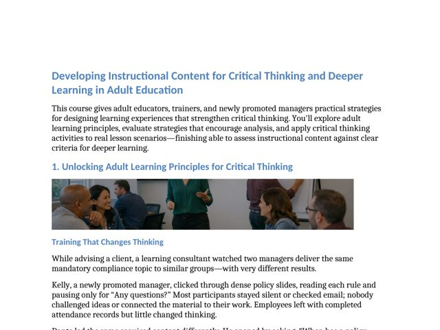

Rise 360 · e-learning
ADDIE
Designing Instructional Content for Critical Thinking in Adult Learning
A four-lesson, self-paced course for adult educators, trainers, and newly promoted managers. Each lesson opens with a workplace story, teaches the core idea, and moves learners into practice with realistic cases. By the end, learners evaluate their own training content against clear criteria for deeper learning.